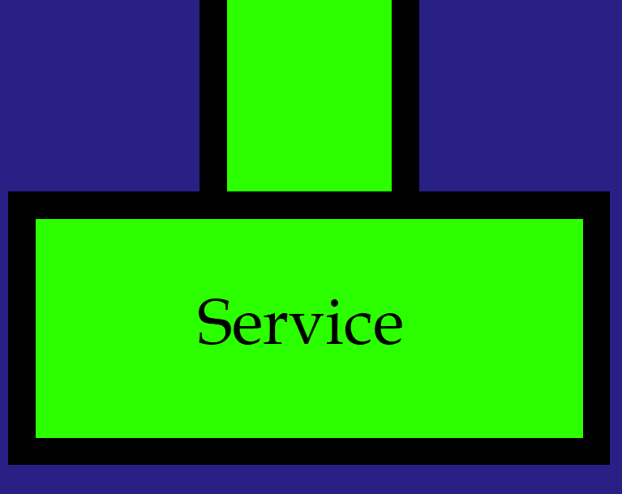
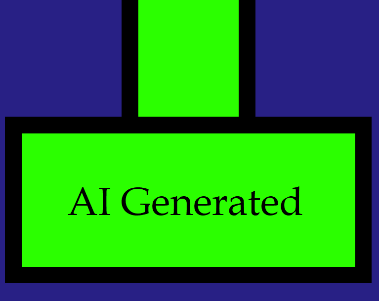
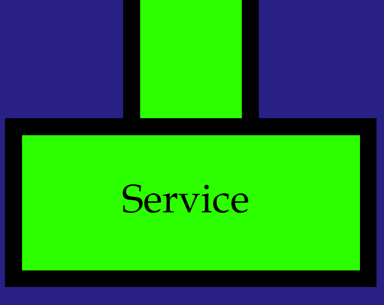
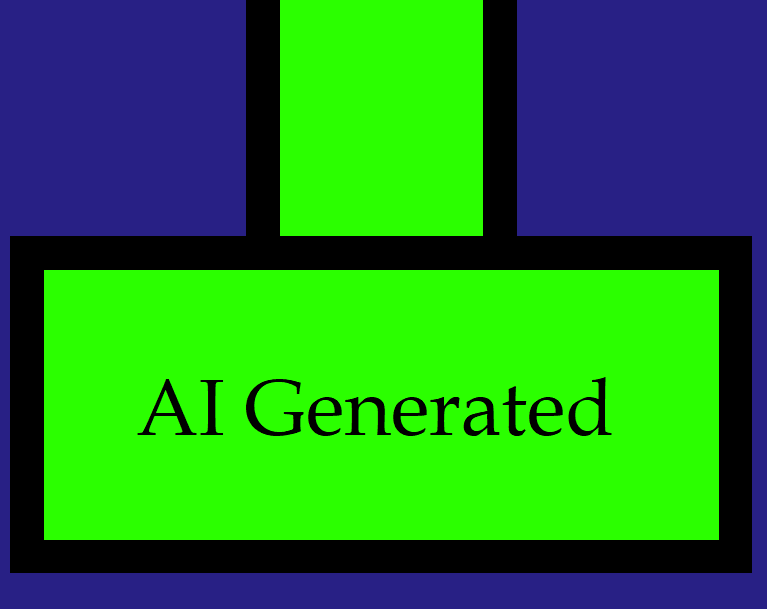

I am particularly interested in data science, low-level coding, and overall software engineering. However, I have found a recent love for Unity game design. I was able to experience working in an actual company setting at Sabre Corporation as a Software Engineering Intern. I still want to get more experience in overall game development and software engineering as I grow in my career. Thanks to Itch.Io, I can host some basic games I created on Unity to explore the engine and C#. Currently, I am working on more in-depth games and other projects that take me out of my comfort zone.
Along with Unity, I have done some projects in Android Studio. My largest personal project was a Camera Lucida App. This app allowed you to select an image which overlayed your camera. The idea was to create a drawing tool that allowed for easy tracing of an image. There were options for size and transparency, and eventually I hope to add it on the Google Play Store. My other application was a entry into a Hackathon called Hack2Tomorrow, a hackathon during quarantine that was held by UC Berkeley graduates. We ended up winning with our app CoronaMap. It was an app that gave a map of nearby testing centers, with information about wait time and appointment status.
|
Here is one of my first developed games, a rendition of Flappy Bird, Flappy Goku. This was an exploration game, where I was getting used to Unity Engine. In the future, I will use the skills I learned here to make more complicated games. | |
|
This game is called Pii Tanks, similar to Wii Tanks, a popular game on the Nintendo Wii. While this game is still not polished, it gave me experience with projectiles and lots of collisions. This is also one of the first "shooter" games that I made. |